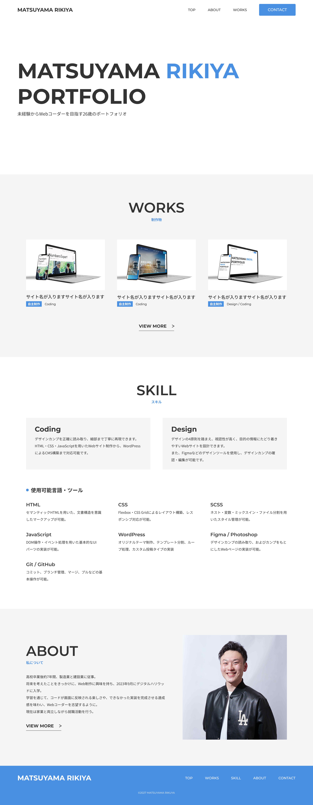

ポートフォリオサイト
自主制作
design / coding

就職活動用のポートフォリオサイトです。 コンテンツ構成設計から行い、採用担当の方が迷わないサイトを目指しました。
- date
- 2026.10
- frontend source
- https://github.com/matsuriki980/my_portfolio

- 目的
- 自身のスキルを伝え、Webコーダーとして採用していただくこと
- 担当範囲
- コーディング
- 使用技術
- HTML /
- SCSS /
- JavaScript /
- Git・GitHub
- 制作期間
- デザイン：約4日 コーディング：約10日
- 工夫した点
-
JavaScriptとCSS変数を活用したレスポンシブアニメーションの実装 4つの項目を示す円を線でつなぎ、線が伸びるアニメーションを実装しました。 当初はposition: absoluteを使用し、pxや%で線の位置と長さを指定していましたが、画面幅によって線がずれる問題が発生しました。 そこで、JavaScriptのgetBoundingClientRect()を使用し、ビューポートを基準に各要素の位置を取得する方法に変更しました。 具体的には、画面の上端・左端から円までの距離と、最初の円から最後の円までの距離を算出し、線の位置と長さを求めました。 算出した値をCSSカスタムプロパティ（CSS変数）に反映することで、画面幅に応じて線の位置と長さを自動調整できるようにしました。 これにより、画面幅による線のずれを解消し、レスポンシブに対応したアニメーションを実現しました。Works詳細ページにおけるSP・PC画像の切り替え機能の実装 スマートフォンでの閲覧時に、SP・PC両方の画像を縦に並べると、スクロール量が増え、ユーザーの操作負担が大きくなるという課題がありました。 そこで、一度に表示する画像を1つに絞り、ボタン操作でSP・PCの画像を切り替えられる機能を実装しました。 これにより、不要なスクロールを減らし、ユーザーが必要な画像を選んで閲覧できるようにしました。